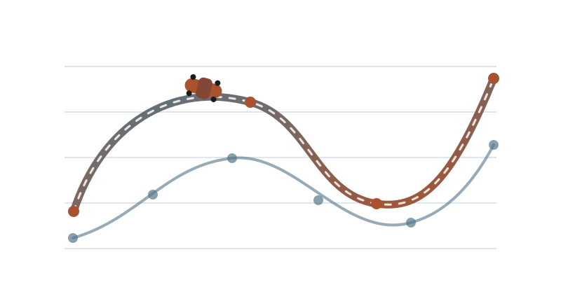
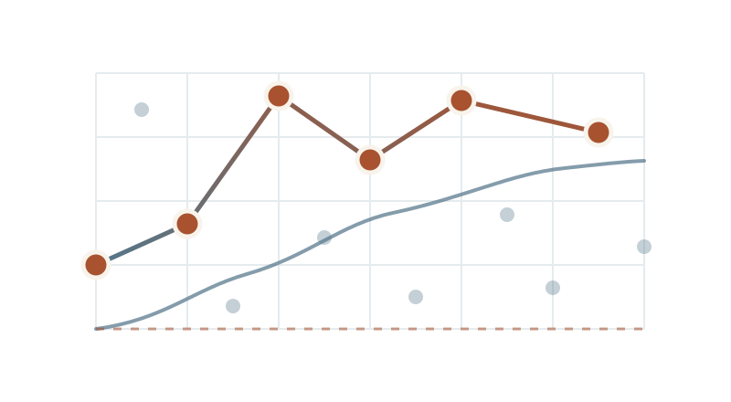
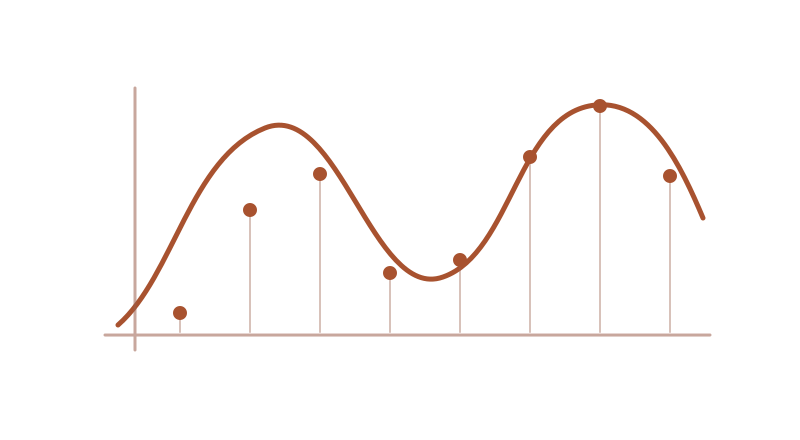
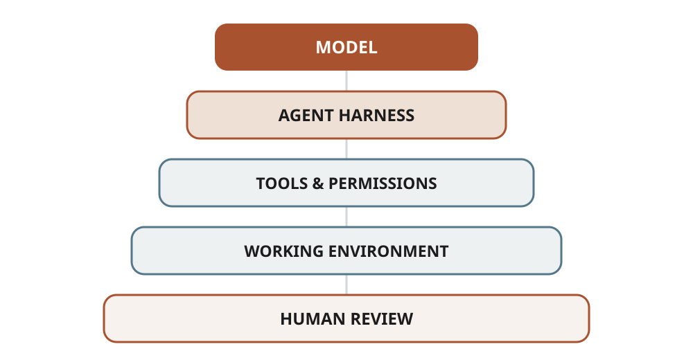
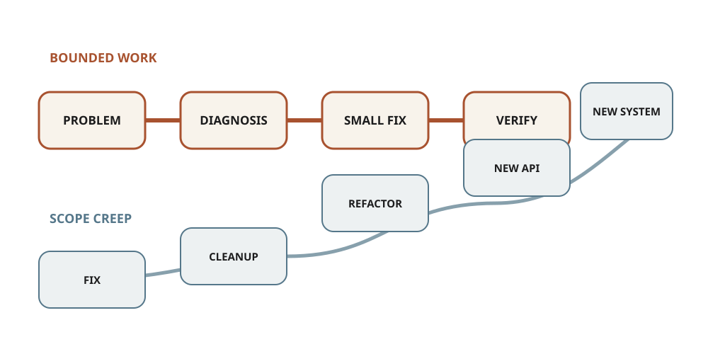
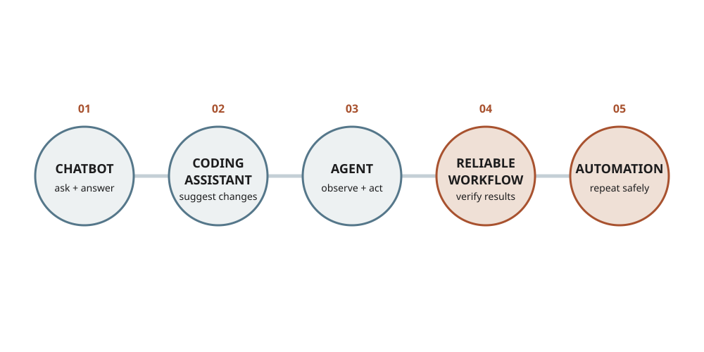

Statistical modelling · Sports analytics · R
Who’s actually the best F1 driver?
An industry-facing explanation of how 2022 race results and 2023 betting odds separate driver performance from constructor advantage.
Applied mathematician · Statistical modeller
I build interpretable models, optimisation methods and reproducible computational tools for complex systems.
My work connects data science, operational research and scientific computing, with applications in medical imaging, sports analytics and decision-making under uncertainty.
Expertise
A capability-led view of the modelling, computation and communication skills behind my research and applied work.
Interpretable models for prediction, ranking, forecasting and uncertainty.
02Methods for choosing well under constraints, uncertainty and limited information.
03Numerical implementation, simulation and reproducible computational workflows.
04Recovering useful structure from incomplete, indirect or noisy observations.
05Clear documentation, programme delivery, collaboration and technical mentoring.
Projects
Three examples showing modelling, implementation and communication—not only technical mathematics.

Statistical modelling · Sports analytics · R
An industry-facing explanation of how 2022 race results and 2023 betting odds separate driver performance from constructor advantage.

Optimisation · Algorithms · Python
A visual pedagogical implementation showing how fully-corrective conditional gradients build sparse solutions one atom at a time.

Statistics · Teaching · R
A complete R-based learning system combining lectures, worked examples, practical exercises and accessible digital publishing.
Approach
I work from problem formulation through modelling, implementation and validation to clear communication. The standard is consistent across the work: make assumptions visible, build reproducibly, test what the evidence supports and explain the result clearly.
Turn an open-ended question into assumptions, objectives, constraints and measurable outcomes.
Translate mathematical and statistical ideas into models, algorithms and reproducible computational experiments.
Communicate the substance for technical, professional and wider audiences without hiding assumptions or unnecessary complexity.
Coordinate programmes and projects, mentor researchers, build collaborations and connect people with different expertise.
Notes
Practical writing on AI-assisted technical work, scope, verification and agent workflows.

A practical account of how I use AI across research, scientific computing and technical communication: where it adds leverage, where I retain control, and how I verify what matters.
Read note →
A practical framework for using AI on serious technical work without losing control of the problem.
Read note →
A practical account of how I moved from using ChatGPT as a chatbot to building a working stack around Codex, OpenCode, DeepSeek, OpenClaw and automation.
Read note →Publications
Selected work spanning optimisation, statistical modelling, inverse problems and applied mathematics.
There is enduring interest in disentangling the effects of skill and luck in sport. A key issue in Formula 1 is distinguishing between car-level and driver-level effects. Four elite teams currently dominate Formula 1 and have won every major race for the last four years. In this paper we use univariate and bivariate normal models to quantify reasonable performance expectations at both driver and team levels, distinguishing between elite and non-elite teams. We illustrate our approach with an application to the last fully completed 2025 season.
@article{2026-Fry-Fan-Aus-Bri,
title = {Benchmarking Formula 1 results using a normal model},
author = {Fry, John and Fanzon, Silvio and Austin, Mark and Brighton, Tom},
journal = {ArXiv Preprint},
year = {2026},
doi = {https://arxiv.org/abs/2603.15192},
url = {https://arxiv.org/abs/2603.15192}
}We propose a fully-corrective generalized conditional gradient method (FC-GCG) for the minimization of the sum of a smooth, convex loss function and a convex one-homogeneous regularizer over a Banach space. The algorithm relies on the mutual update of a finite set \(A_k\) of extremal points of the unit ball of the regularizer and of an iterate \(u_k \in \operatorname{cone}(A_k)\). Each iteration requires the solution of one linear problem to update \(A_k\) and of one finite dimensional convex minimization problem to update the iterate. Under standard hypotheses on the minimization problem we show that the algorithm converges sublinearly to a solution. Subsequently, imposing additional assumptions on the associated dual variables, this is improved to a linear rate of convergence. The proof of both results relies on two key observations: First, we prove the equivalence of the considered problem to the minimization of a lifted functional over a particular space of Radon measures using Choquet’s theorem. Second, the FC-GCG algorithm is connected to a Primal-Dual-Active-point Method (PDAP) on the lifted problem for which we finally derive the desired convergence rates.
@article{2024-Bre-Car-Fan-Wal,
title = {Asymptotic linear convergence of Fully–Corrective Generalized Conditional Gradient methods},
author = {Bredies, Kristian and Carioni, Marcello and Fanzon, Silvio and Walter, Daniel},
journal = {Mathematical Programming},
year = {2024},
volume = {205},
pages = {135-202},
doi = {10.1007/s10107-023-01975-z},
url = {https://doi.org/10.1007/s10107-023-01975-z}
}Two natural ways of modelling Formula 1 race outcomes are a probabilistic approach, based on the exponential distribution, and econometric modelling of the ranks. Both approaches lead to exactly soluble race-winning probabilities. Equating race-winning probabilities leads to a set of equivalent parametrisations. This time-rank duality is attractive theoretically and leads to quicker ways of dis-entangling driver and car level effects.
@article{2024-Fry-Bri-Fan,
title = {Faster identification of faster Formula 1 drivers via time-rank duality},
author = {Fry, John and Brighton, Tom and Fanzon, Silvio},
journal = {Economics Letters},
year = {2024},
volume = {237},
pages = {111671},
doi = {10.1016/j.econlet.2024.111671},
url = {https://doi.org/10.1016/j.econlet.2024.111671}
}We develop a dynamic generalized conditional gradient method (DGCG) for dynamic inverse problems with optimal transport regularization. We consider the framework introduced in Bredies and Fanzon (ESAIM: M2AN 54:2351–2382, 2020), where the objective functional is comprised of a fidelity term, penalizing the pointwise in time discrepancy between the observation and the unknown in time-varying Hilbert spaces, and a regularizer keeping track of the dynamics, given by the Benamou–Brenier energy constrained via the homogeneous continuity equation. Employing the characterization of the extremal points of the Benamou–Brenier energy (Bredies et al. in Bull Lond Math Soc 53(5):1436–1452, 2021), we define the atoms of the problem as measures concentrated on absolutely continuous curves in the domain. We propose a dynamic generalization of a conditional gradient method that consists of iteratively adding suitably chosen atoms to the current sparse iterate, and subsequently optimizing the coefficients in the resulting linear combination. We prove that the method converges with a sublinear rate to a minimizer of the objective functional. Additionally, we propose heuristic strategies and acceleration steps that allow to implement the algorithm efficiently. Finally, we provide numerical examples that demonstrate the effectiveness of our algorithm and model in reconstructing heavily undersampled dynamic data, together with the presence of noise.
@article{2023-Bre-Car-Fan-Rom,
title = {A Generalized Conditional Gradient Method for Dynamic Inverse Problems with Optimal Transport Regularization},
author = {Bredies, Kristian and Carioni, Marcello and Fanzon, Silvio and Romero, Francisco},
journal = {Foundations of Computational Mathematics},
year = {2023},
volume = {23},
pages = {833–898},
doi = {10.1007/s10208-022-09561-z},
url = {https://doi.org/10.1007/s10208-022-09561-z}
}News
Recent updates on research, publications, software, teaching and professional activity.
Our new paper, Benchmarking Formula 1 results using a normal model, is now available as a preprint. A long-standing question in sport is how to separate the effects of skill and luck. In Formula 1, this often comes down to distinguishing between driver performance and the performance of the car. At present, four elite teams dominate the sport and have won every major race over the past four years. In the paper, we use univariate and bivariate normal models to estimate realistic performance expectations at both the driver and team levels, distinguishing between elite and non-elite teams. This provides a more meaningful benchmark for Formula 1 results. We apply the approach to analyse the most recent fully completed F1 season (2025). You can read the paper here
On 11th February, I will be taking part in the Annual Research Sandpit Event hosted by the School of Digital and Physical Sciences at the University of Hull. This is a fantastic opportunity to meet new colleagues and discuss research interests. My slides are available here.
From 17-19 December I will be at the 1st Workshop of Young Analysts in Rome conference at Sapienza University in Rome (Italy). I will be presenting on 18 December at 2.30pm. Here are the slides. I am extremely grateful to the organizers for the invite.
I have successfully completed the Postgraduate Certificate in Academic Practice (PCAP) programme at the University of Hull. As a result, I have been awarded the Fellowship of the Higher Education Academy (FHEA)
I have just completed writing my teaching philosophy statement! It was a thoughtful process reflecting on my approach, values, and goals as an educator. I am sharing it now - check it out here. Looking forward to continuing to grow as a teacher!
Our paper Elementary econometric and strategic analysis of curling matches has been published on Managerial Finance. We develop a Markov model of curling matches, parametrised by the probability of winning an end and the probability distribution of scoring ends. Using a maximum entropy argument, we predict that the points distribution of scoring ends should follow a constrained geometric distribution. Read the paper here
I am teaching the module Statistical Models at the University of Hull. This is a Year 2 module for the BSc in Mathematics 2024/25. Here are the module Webpage and Slides
During T1 of the 2024/25 academic year, I am teaching the modules Numbers, Sequences and Series and Differential Geometry at the University of Hull. You can find lecture notes and more information by following the links
Background
My approach was shaped by an EPSRC-funded PhD at the University of Sussex, postdoctoral research in motion-aware medical imaging at the University of Graz, and faculty roles in Austria and the UK.
At the University of Hull I held a permanent Lecturer in Applied Mathematics post—the UK academic grade closest to Assistant Professor—and served as Programme Director for the MSc in Mathematics. That career also developed my skills in leadership, collaboration, supervision, technical documentation and communication.